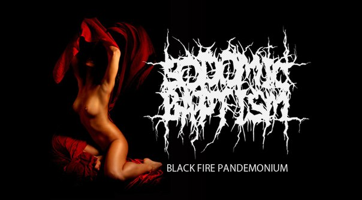
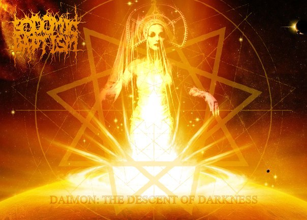
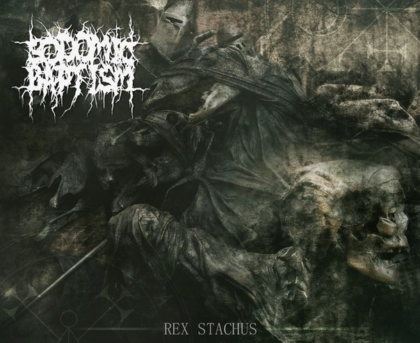

Sodomic Baptism

Группа Sodomic Baptism была создана в начале 2014 года Алексеем и Александром Тетиными, фронтменами групп Happy Face и Ann Core.
Alexis Tetin — guitar, bass guitar
Alex Tetin — voice, lyrics
«Black Fire Pandemonium» (2014) EP:
1. Daimon: Intro (Part 1) 0:41
2. Daimon: The Descent of Darkness (Part 2) 4:54
3. Black Fire Pandemonium 4:05
4. Rex Stachus 4:32
Сразу видно уважение к проектам «Black Fire Pandemonium» и «Δαίμων» :-)
Δαίμων is the descent of Darkness.
Δαίμων — it's thou, who's unburied the self.
Δαίμων — that's thou into the Abyss.
The Darkness is primordial. That's only the Abyss.
HERE ARE THE ONE.
https://sodomicbaptism.bandcamp.com/releases
www.vk.com/sodomicbaptism
http://vk.com/audios-62597810
www.facebook.com/SodomicBaptism
https://www.youtube.com/channel/UCx-t2FNVVnbwMGq6eK-WjyA
«Δαίμων» очень одобряет правильное понимание сатанизма группой, а также подход к качеству материла.
Небольшое интервью, взятое у Алексея (август 2014):
«Δαίμων»: — Расскажите о составе группы, пока двое и сессионные музыканты?
— Состав группы: я (гитара и бас-гитара) и мой брат Александр (вокал). Вскоре доберём музыкантов для концертной деятельности. В записи промо принимали участие сессионные музыканты, наши друзья.
«Δαίμων»: — Вы очень кардинально сменили стиль музыки, в котором играли ранее и даже добились известности. Чем это вызвано?
— Да, действительно — мы играли раньше в разных роковых проектах и добились немалой популярности у себя на Родине. Но я всегда хотел играть дэт-метал и мне представилась такая возможность. Переговорив с Сашей, мы объединились и начали делать что-то новое. Хотя я всегда слушал такую музыку и она мне нравилась. Но вот только сейчас появилась такая возможность сделать что-то для себя…
«Δαίμων»: — Чем именно вам нравится выбранный музыкальный стиль?
— Дэт-метал я выбрал потому, что здесь я могу воплотить свои идеи как композитор. Меня иногда прёт на написание музыки, а дэт-метал как нельзя лучше отображает мой внутренний мир. Здесь я могу полностью раскрыться как музыкант и воплотить свои самые безумные идеи. А также в этом стиле я могу себя выразить и как сатанист, показать свою тёмную сущность, от чего получаю истинное наслаждение.
«Δαίμων»: — Распространено мнение, что «самый сатанинский» стиль — это black metal. А как вы считаете?
— Нет, я так не считаю и в корне не согласен. Вообще для меня не существует понятия «сатанинский стиль в музыке»…. Это как? Кто больше грима намажет или кто больше крестов на сцене сожжёт? :-) Любая музыка, которая несёт идеи сатанизма и Тьмы может называться сатанинской. Будь то симфоническая музыка или даже хип-хоп :-) Хотя это уже нонсенс :-) И, кстати, — не всё то золото, что блестит. Это я к блэк металу... Если группа нацепила кучу перевёрнутых крестов и испражняется на сцене, это ещё не показатель, что они являются сатанистами, — скорее, фриками и позерами... Но это тоже имеет место быть.
«Δαίμων»: — Как вы выбрали название?
— Ну, во-первых, оно взято из творчества группы «Disgorge», там есть одноимённая песня, очень нравилась в своё время. Во-вторых, выбранный стиль обязывает к нездоровому пафосу :-) Есть, например, очень хорошая группа «Sodom». Ну а Sodomic Baptism… Вообще-то, baptize — это не только крещение, как обычно переводят, но и инициация вообще. Ну и подумалось что-то типа «если люди не понимают простых вещей головой, то, может, с другой стороны дойдёт…» :-) Как-то сначала особо не думали над названием, а потом оказалось, что к рабочему уже все привыкли. Нет ничего более постоянного, чем то, что запланировано как временное :-)
«Δαίμων»: — Проект носит явно сатанинский характер. Как вы понимаете сатанизм?
— В наших композициях мы затрагиваем тему метафизического Зла, Ада, Тьмы, Бездны, Хаоса. В центре всего стоит, конечно же, Сатана как олицетворение Тьмы. Мракобесие, раболепство, алчность, зависть, злоба — это удел клерикалов. Сатана же в наших песнях олицетворяет свободу и высшую справедливость к тем, кто её заслужил. Мы не поём о перевёрнутых крестах, убийствах некрещёных младенцев, поджогах церквей и всякой чуши, которой пугают обывателя жёлтая пресса и священнослужители. Для нас Сатана — это глубокое изучение себя как части Тьмы, той её стороны, где познание Пути бесконечно. В принципе, ничего доносить до людей мы не хотим. Человек сам должен до себя донести, что он Человек, а не раб… Пусть послушает наши песни и подумает: «Кто я?»
«Δαίμων»: — Как вы сами пришли к сатанизму?
— Лично я пришёл к сатанизму после очень долгих измышлений. В 15 лет мне попалась книга Папюса «Практическая магия» и это событие перевернуло мою жизнь. А дальше тонны литературы по оккультизму (нужной и нет), различных практик, попытки осмыслить всё это и понять, объединить в общую систему… Потом отход от всего и снова попытки как-то для себя систематизировать те знания, которые я постиг, но каша в голове была хорошая :-) И только лет пять назад, всё взвесив и обдумав (уже осознанно) я стал чувствовать себя частью Тьмы. Я стал неотделим от неё. Я стал Ею (Тьмой)... А теперь я просто продвигаю в музыке всё то, что во мне накопилось. Как могу, приоткрываю Врата и впускаю в наш мир Тьму… Сатанизм — это активная позиция, поэтому называть себя сатанистом и сидеть на печи, нечего не делая, это как-то уж совсем не по-сатанински.
«Δαίμων»: — Вы упоминали в интернете про сотрудничество с проектом «Даймон», в чём оно будет заключаться?
— Я пишу сначала музыку, текст для меня вторичен, лишь бы создавал настроение. Поэтому в уже написанных песнях некоторые места могли бы быть точнее, выражать Тьму корректнее. Когда мы начнём писать новые композиции, то будем сотрудничать на тему правильности смысла текстов, чтобы песни были профессиональны с любой точки зрения. Первый эксперимент, «Daimon: Intro», оказался удачным, так что обязательно будем сотрудничать.
«Δαίμων»: — Что, по-вашему, является актуальными задачами для сатанизма и сатанистов в настоящее время?
— Я повторюсь, наверное, но.... Я считаю самой актуальной для себя задачей как сатаниста продвижение в массы собственно самих идей сатанизма. Ведь не секрет, что на сегодняшний день сатанизм воспринимают так же, как и 200-300 лет назад. Кровавые шабаши, убийства, растление малолетних, жертвоприношения Сатане и т.д. и т.п. Поэтому моя задача — не только развеять этот миф, но и показать, что сатанизм — это цельное мировоззрение, философия... С которым убийства и жертвоприношения ну никак не вяжутся. Я музыкант и показываю это музыкой. Кто-то поэт — и показывает это стихами. Не важно, как это делать, важно делать. Развивая Тьму, ты развиваешься сам как личность, а это, я думаю, и есть Путь.

